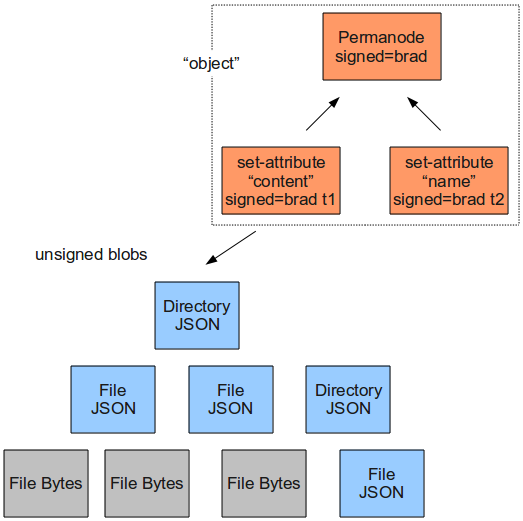

Camlistore
Brad Fitzpatrick
2011-05-07
Brad Fitzpatrick
2011-05-07
| Danga / 6A (Perl) |
LiveJournal
memcached
Perlbal
MogileFS
OpenID
|
WebFinger
PubSubHubbub
Android
Go
|
|---|
Camlistore is a way to store, sync, share, model and back up content

{
"camliVersion": 1,
"camliType": "whatever"
}
Whitespace doesn't matter. Just must be valid JSON in its entirety. Use whatever JSON libraries you've got.
That one is named
sha1-19e851fe3eb3d1f3d9d1cefe9f92c6f3c7d754f6
or perhaps: sha512-2c6746aba012337aaf113fd63c24d994a0703d33eb5d6ed58859e45dc4e02dcf
dae5c4d46c5c757fb85d5aff342245fe4edb780c028a6f3c994c1295236c931e
{"camliVersion": 1,
"camliType": "file",
"fileName": "foo.dat",
"unixPermission": "0644",
...,
"size": 6000133,
"contentParts": [
{"blobRef": "sha1-...dead", "size": 111},
{"blobRef": "sha1-...beef", "size": 5000000, "offset": 492 },
{"size": 1000000},
{"blobRef": "digalg-blobref", "size": 22},
]
}{"camliVersion": 1,
"camliType": "directory",
"fileName": "foodir",
"unixPermission": "0755",
...,
"entries": "sha1-c3764bc2138338d5e2936def18ff8cc9cda38455"
}{"camliVersion": 1,
"camliType": "static-set",
"members": [
"sha1-xxxxxxxxxxxx",
"sha1-xxxxxxxxxxxx",
"sha1-xxxxxxxxxxxx",
"sha1-xxxxxxxxxxxx",
"sha1-xxxxxxxxxxxx",
"sha1-xxxxxxxxxxxx",
]
}$ camput --file $HOME sha1-8659a52f726588dc44d38dfb22d84a4da2902fed
(like git/hg/fossil, that identifier represents everything down.)
Iterative backups are cheap, easy identifier to share, etc
But how will you remember that identifier? (later)
$ camput --permanode sha1-ea799271abfbf85d8e22e4577f15f704c8349026 $ camget sha1-ea799271abfbf85d8e22e4577f15f704c8349026 {"camliVersion": 1, "camliSigner": "sha1-c4da9d771661563a27704b91b67989e7ea1e50b8", "camliType": "permanode", "random": "oj)r}$Wa/[J|XQThNdhE" ,"camliSig":"iQEcBAABAgAGBQJNRxceAAoJEGjzeDN/6vt8ihIH/Aov7FRIq4dODAPWGDwqL 1X9Ko2ZtSSO1lwHxCQVdCMquDtAdI3387fDlEG/ALoT/LhmtXQgYTt8QqDxVdu EK1or6/jqo3RMQ8tTgZ+rW2cj9f3Q/dg7el0Ngoq03hyYXdo3whxCH2x0jajSt4RCc gdXN6XmLlOgD/LVQEJ303Du1OhCvKX1A40BIdwe1zxBc5zkLmoa8rClAlHdqwo gxYFY4cwFm+jJM5YhSPemNrDe8W7KT6r0oA7SVfOan1NbIQUel65xwIZBD0ah CXBx6WXvfId6AdiahnbZiBup1fWSzxeeW7Y2/RQwv5IZ8UgfBqRHvnxcbNmScrzl p3V3ZoY"}
$ camput --file $HOME sha1-8659a52f726588dc44d38dfb22d84a4da2902fed $ camput --permanode --file $HOME sha1-ea799271abfbf85d8e22e4577f15f704c8349026 $ camput --permanode --name="Brad's home directory" --file $HOME sha1-ea799271abfbf85d8e22e4577f15f704c8349026


Any element with child nodes can build.
It doesn't have to be a list.
| Name | Occupation |
|---|---|
| Luke Mahé | V.P. of Keepin’ It Real |
| Marcin Wichary | The Michael Bay of Doodles |
| Name | Occupation |
|---|---|
| Luke Mahé | V.P. of Keepin’ It Real |
| Marcin Wichary | The Michael Bay of Doodles |

<script type='text/javascript'>
// Say hello world until the user starts questioning
// the meaningfulness of their existence.
function helloWorld(world) {
for (var i = 42; --i >= 0;) {
alert('Hello ' + String(world));
}
}
</script>
<style>
p { color: pink }
b { color: blue }
u { color: 'umber' }
</style>
<script type='text/javascript'>
// Say hello world until the user starts questioning
// the meaningfulness of their existence.
function helloWorld(world) {
for (var i = 42; --i >= 0;) {
alert('Hello ' + String(world));
}
}
</script>
<style>
p { color: pink }
b { color: blue }
u { color: 'umber' }
</style>
The best way to predict the future is to invent it.
A distributed system is one in which the failure of a computer you didn’t even know existed can render your own computer unusable.